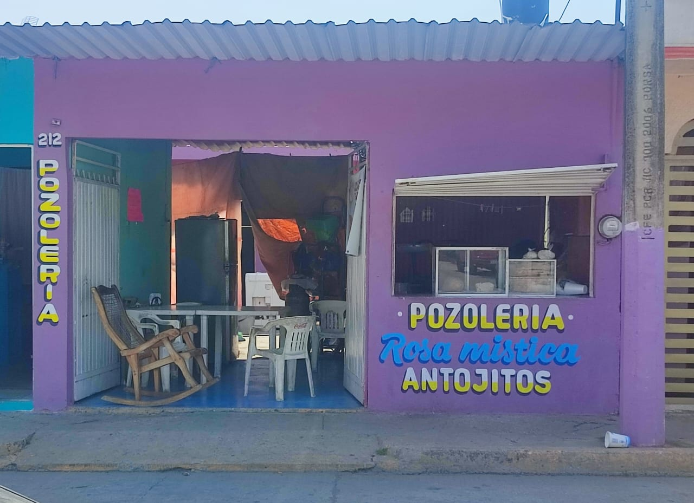

"Rosa Mistica"
Es una empresa de venta de alimento
"Antojitos y Pozoleria que tiene un gran menu
Misión:
Satisfacer los antojos culinarios de nuestros clientes
ofreciendo antojitos de comida frescos, auténticos y
deliciosos, en un ambiente acogedor que refleje la calidez
de la comida casera.
Visión:
Ser reconocidos como el lugar preferido para disfrutar
de antojitos de comida, destacando por nuestra variedad de
sabores auténticos, servicio excepcional y contribuyendo a
crear momentos memorables alrededor de la mesa.
Aspiramos a ser un referente en la escena gastronómica local,
conectando con la comunidad a través de la pasión por la
buena comida.
Valores:
-Responsabilidad
-Calidad
-Honestidad
-Compromiso
-Confianza
-Trabajo en equipo
-Respeto
-Liderazgo
-Calidad
